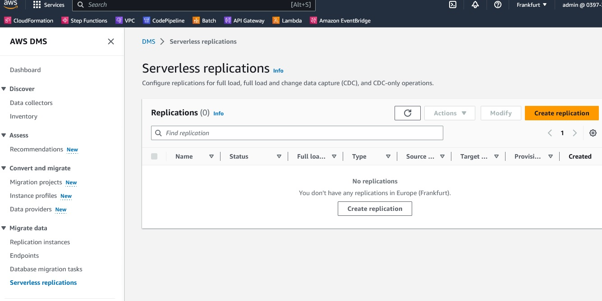
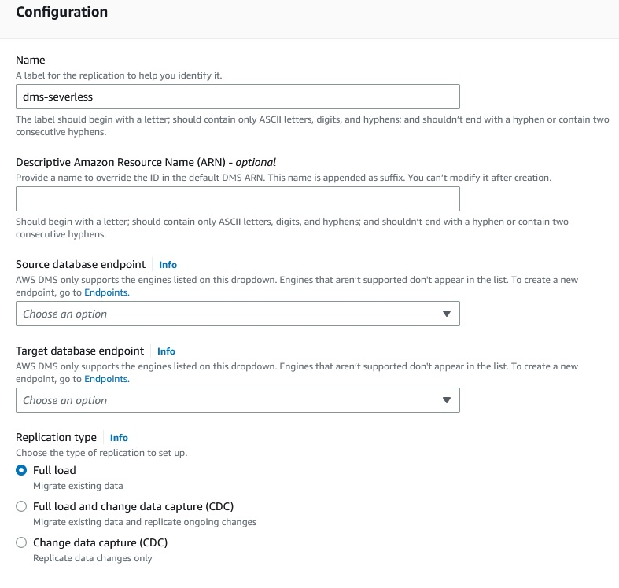
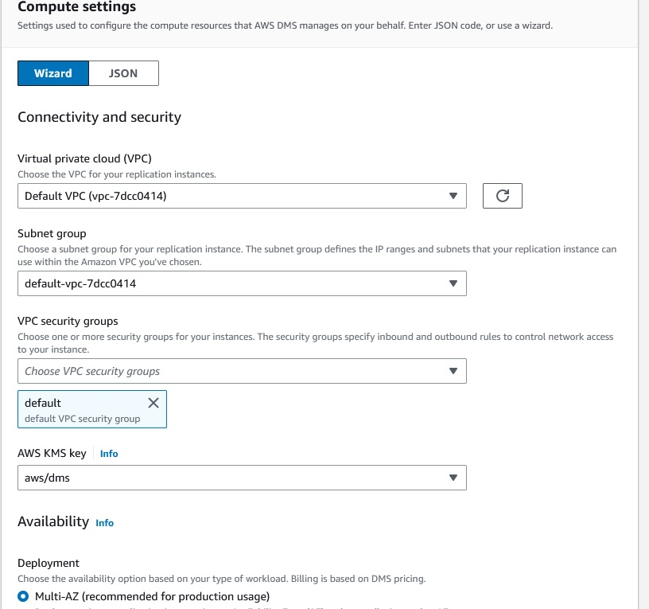
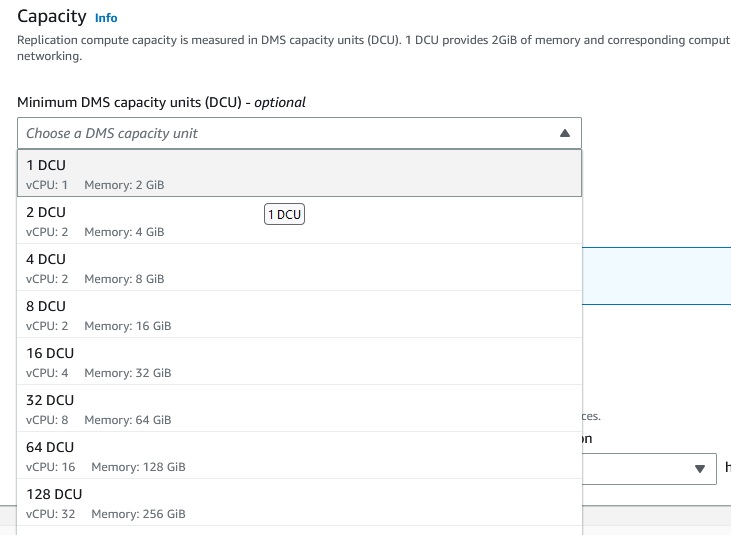
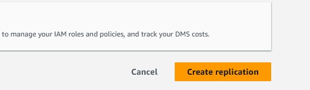

SCC
Brasil
os cloud gurus
Software Cloud Consulting
Your software development, cloud, consulting & shoring company
DMS Serverless

By Wolfgang Unger
Maybe you already used DMS (Database Migration Service)
If so, you know, you have to provision the EC2 instance on which runs the Database Migration
Service. So you have to research an plan the desired capacity you are going to need.
By now, June 2023, this is no longer required.
The DMS is now available Serverless.
If you open DMS in the web-console you will now find Serverless Migration in the left main
menu.

At launch, AWS DMS Serverless supports Microsoft SQL Server, PostgreSQL, MySQL, and Oracle as
data sources.
For Data Targets even more, Amazon Aurora, Amazon Relational Database Service (Amazon RDS),
Amazon Simple Storage Service (Amazon S3), Amazon Redshift, Amazon DynamoDB and others.
If you Create a new replication, the configuration is by now really easy.
You have to define a name, replication type and the 2 endpoints ( source and target), thats it
basically.
Of course you got still the options for Dropping tables or not, LOB mode, Table Mappings,
etc.
But the guesswork of figuring out, what Instance Type for your DMS would be the best, is now
obsolet.

For replication type you have these options:
- Full load — If I need to migrate all existing data in source database
- Change data capture (CDC) — If I have to replicate data changes from source to target
database.
- Full load and change data capture (CDC) — If I need to migrate existing data and replicate
data changes from source to target database.
Many sections like Table Mapping have not change, so no need to cover them here.
Interesting is the compute section, where you now define only the Capacity Units and lo longer a
instance.


Setting the maximum capacity allows you to manage costs by making sure that AWS DMS Serverless
never consumes more resources than you have budgeted for.
Finally you just press 'Create Replication' and then you can start to replicate your data.

After you have started the replication you can monitor the progress in the Monitoring tab.
Once the replication is done, the capacity should start to decrease.
This indicates that in addition to AWS DMS Serverless successfully scaling up to the required
capacity,
it can also scale down within the range you have defined
So by now, you only have to verify your data has been successfully replicated to your target
database.
Try it out and enjoy the new feature!
Autor

Wolfgang Unger
AWS Architect & Developer
6 x AWS Certified
1 x Azure Certified
A Cloud Guru Instructor
Certified Oracle JEE Architect
Certified Scrum Master
Certified Java Programmer
Passionate surfer & guitar player